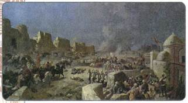
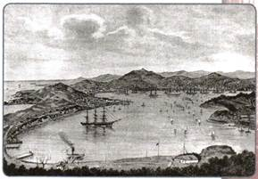
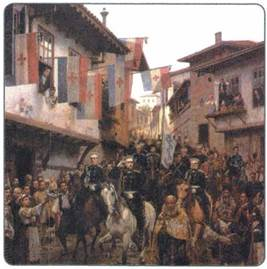
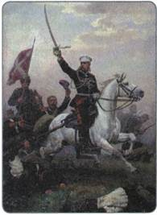
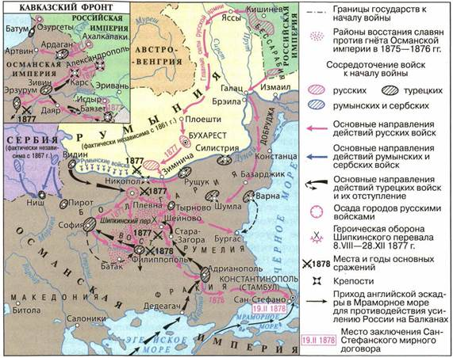
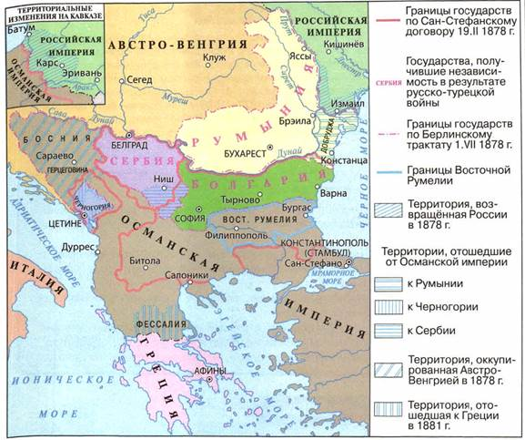

Какие внешнеполитические задачи удалось решить в период правления Александра II? В чём состояло главное значение русско-турецкой войны 1877—1878 гг.?
1. Россия и Западная Европа
Как мы уже знаем, основное внимание Александра II было сосредоточено на проведении внутренних реформ. Их успех в немалой степени зависел от внешнеполитической обстановки: новая война могла сорвать процесс проведения преобразований. Поэтому все важнейшие задачи стремились решать дипломатическими средствами.
Вспомните, чем окончилась Крымская война. Как она повлияла на международное положение России?
А. М. Горчаков
После окончания Крымской войны главной задачей внешней политики стал пересмотр условий Парижского мирного договора. Этим вплотную занялся новый министр иностранных дел, талантливый дипломат князь А. М. Горчаков. В письме Александру II он отмечал: «При современном положении нашего государства и Европы вообще главное внимание России должно быть упорно направлено на осуществление дела нашего внутреннего развития и вся внешняя политика должна быть подчинена этой задаче». Исходя из этой цели, были выделены главные задачи внешней политики: выход из международной изоляции и восстановление роли России как великой державы, отмена унизительных статей Парижского мирного договора, запрещавших иметь флот и военные укрепления на Чёрном море. Кроме того, необходимо было договорами закрепить границы с соседними государствами в Средней Азии и на Дальнем Востоке.
Главные усилия дипломатов были направлены на поиск союзников в Европе, выход России из изоляции и развал антирусского блока (который составляли Франция, Англия и Австрия). В этом блоке отсутствовало единство, бывшие союзники по антирусской коалиции испытывали острые разногласия, доходившие порой до вооружённых столкновений.
Александр Михайлович Горчаков (1798—1883)
Русский государственный деятель, дипломат. Образование получил в Царскосельском лицее, был другом А. С. Пушкина. Служил в посольствах в Лондоне, Берлине и др. В период с 1856 по 1879 г. возглавлял Министерство иностранных дел Российской империи. На этом посту он стремился всемерно восстановить международный престиж и влияние России мирным дипломатическим путём, избегая войны. Именно благодаря ему в 1871 г. были отменены статьи Парижского договора о нейтрализации Чёрного моря.
Первоначально Россия направила усилия на сближение с Францией. В 1859 г. был подписан договор о сотрудничестве России с Францией, однако прочным этот союз не стал, поскольку между двумя странами обнаружились острые противоречия. Во время Польского восстания 1863—1864 гг. Франция вместе с Англией встала на сторону повстанцев, попыталась вынудить Россию согласиться на требование восставших.
Этот кризис привёл к сближению России и Пруссии, которая разрешила преследовать польских повстанцев на своей территории. Возглавлявший внешнюю политику Пруссии канцлер О. Бисмарк стремился к планомерному объединению германских земель. Благодаря тому что Россия заняла благожелательный нейтралитет, он смог приступить к войне с Францией. В ответ на это Пруссия обязалась поддерживать Россию в борьбе за пересмотр условий Парижского мира.
В самый разгар Франко-прусской войны 1870—1871 гг. А. М. Горчаков заявил, что Россия больше не считает себя связанной обязательствами Парижского договора в части нейтрализации Чёрного моря (которые к тому же ранее уже нарушали другие державы), поскольку это ущемляет суверенитет России. В марте 1871 г. на Лондонской конференции отмена нейтрализации Чёрного моря была официально закреплена договором. Этот факт стал настоящей победой русской дипломатии. Сразу же после этого Россия приступила к созданию на Чёрном море военного флота, восстановлению разрушенных и строительству новых военных укреплений.
Однако поражение Франции в войне с Пруссией и последовавшее вслед за этим объединение Германии изменило соотношение сил в Европе. На западных рубежах России появилась мощная держава — Германская империя. Особую угрозу представлял союз Германии с Австрией (с 1867 г. называлась Австро-Венгрия). Чтобы не допустить этого союза и временно нейтрализовать Англию, раздражённую успехами России в Средней Азии, Горчаков организовал в 1873 г. встречу императоров России, Германии и Австро-Венгрии. Три монарха подписали соглашение, согласно которому они обязывались оказывать друг другу помощь, включая и военную. Этот союз получил название «Союз трёх императоров». Однако он просуществовал недолго. Два года спустя, когда Германия вновь вознамерилась напасть на Францию, Россия, встревоженная чрезмерным усилением новой европейской державы, выступила против войны. Окончательно «Союз трёх императоров» распался в 1878 г.
2. Политика России в Средней Азии
После того как в XVIII — начале XIX в. в состав России вошли народы Северного Казахстана, она оказалась в непосредственном соседстве с тремя среднеазиатскими государствами: Бухарским эмиратом, Кокандским и Хивинским ханствами. В хозяйственной жизни этих государств серьёзную роль играло рабство. Кроме оседлого земледельческого населения, на территории Средней Азии жили кочевые скотоводческие племена, совершавшие постоянные набеги на казахов — новых подданных России. Местных жителей захватывали в плен, а затем продавали в рабство. Для предотвращения подобных действий по линии российской границы продолжалось создание системы укреплений — военных линий. Однако набеги не прекращались, и генерал-губернаторы пограничных областей по своей инициативе совершали ответные походы.
Расширение отношений со среднеазиатскими территориями было выгодно России и с военной точки зрения (как защита своих приграничных территорий), и с экономической стороны (выращиваемый здесь хлопок был важным сырьём для российской текстильной промышленности). Значение среднеазиатского рынка для России возросло в первой половине 1860-х гг., когда из-за Гражданской войны между Севером и Югом были нарушены поставки хлопка из США. Эти обстоятельства подталкивали к продвижению России в Среднюю Азию.
В 1865 г. русские войска под командованием генерала М. Г. Черняева, воспользовавшись войной между Бухарой и Кокандом, почти без потерь овладели Ташкентом и рядом других городов Кокандского ханства. Несмотря на протест со стороны Англии, Александр II не отказался от занятых территорий. Земли ханства были присоединены к России, образован Туркестанский край, в 1867 г. составивший особую единицу управления — Туркестанское генерал-губернаторство с центром в Ташкенте. Во главе его был поставлен генерал К. П. Кауфман. Для защиты восточных границ края было сформировано Семиреченское казачье войско.
В 1868 г. бухарский эмир объявил о начале «священной войны» против России. В ответ на это русские войска под командованием Кауфмана разбили главные силы эмира и в мае 1868 г. вошли в Самарканд. Эмир признал себя вассалом России.
В 1873 г. русские войска начали военные действия против Хивинского ханства. Местное население практически не оказывало им сопротивления. Более того, некоторые представители местной знати перешли на службу к России. В августе 1873 г. хивинский хан признал себя «покорным слугою» императора и обязался проводить внешнюю и внутреннюю политику лишь «с ведома и разрешения высшей русской власти в Средней Азии». Российские купцы получили право беспошлинной торговли во всех городах и селениях ханства. В сентябре 1873 г. подобный договор был подписан с бухарским эмиром. Российские подданные получили право заниматься судоходством, торговлей, владеть недвижимостью. При этом Бухарский эмират и Хивинское ханство сохраняли внутреннюю автономию и существовавшую в них систему управления.

Вступление русских войск в Самарканд. Художник Н. Н. Каразин
Бухарский солдат. Художник В. В. Верещагин
В 1875 г. русские отряды под командованием генерала М. Д. Скобелева разгромили войска кокандского хана. В феврале 1876 г. Кокандское ханство было упразднено, а его территория включена в состав Туркестанского генерал-губернаторства. Окончательное включение Средней Азии в состав России произошло в правление следующего императора, Александра III, в 1882 г.
3. Политика России на Дальнем Востоке
До середины XIX в. Россия не имела официально признанных границ со своими соседями на Дальнем Востоке. Русские первопроходцы продолжали расселяться на этих землях, а также на Сахалине и Курильских островах. Большое, не только научное, но и политическое, значение имели экспедиции Г. И. Невельского на побережья Татарского пролива и Сахалина и исследование генерал-губернатором Восточной Сибири Н. Н. Муравьёвым берегов Амура. Для освоения и охраны земель вдоль Амура были сформированы в 1851 г. Забайкальское, а в 1858 г. Амурское казачьи войска.
Развязанная в конце 1850-х гг. Англией и Францией вторая «опиумная война» против Китая не была поддержана Россией, что вызвало благожелательный отклик в Пекине. Этим воспользовался Н. Н. Муравьёв, предложив китайскому правительству подписать договор об установлении границ. Наличие селений русских первопроходцев, а также результаты экспедиций послужили вескими доводами для основания претензий России на Приамурье и Приморье. В мае 1858 г. Муравьёв подписал с представителями китайского правительства Айгунский договор, по которому граница с Китаем устанавливалась по Амуру до впадения в него реки Уссури. Уссурийский край между этой рекой и Тихим океаном объявлялся совместным русско-китайским владением. За этот договор Муравьёв получил титул графа Амурского. В 1860 г. был подписан новый, Пекинский договор, согласно которому Уссурийский край становился владением России. 20 июня 1860 г. русские моряки вошли в бухту Золотой Рог и основали порт Владивосток.
Сложно шли переговоры по определению границы между Россией и Японией.
По Симодскому договору 1855 г., заключённому в японском городе Симода в самый разгар Крымской войны, Курильские острова признавались территорией России, а остров Сахалин — совместным владением двух стран. После подписания этого договора на Сахалин устремилось значительное количество японских переселенцев. Чтобы избежать осложнений в отношениях с Японией, Россия согласилась на новые условия. По Петербургскому договору 1875 г. Сахалин полностью отходил к России, а острова Курильской гряды — к Японии.

Вид на гавань Владивостока. Вторая половина XIX в.
4. Продажа Аляски
После Крымской войны противостояние интересов России и Англии не только усилилось, но и приобрело глобальный характер. Оно обострилось не только в Средней Азии, куда Россия активно продвигалась в эти годы, но и в Северной Америке. Британцы, осваивая североамериканские просторы, всё больше приближались к Русской Америке, удержать которую России становилось всё сложнее. Создавалась реальная угроза утраты этих территорий. А это могло привести и к дальнейшей экспансии Англии в дальневосточные пределы России. К тому же расходы казны давно уже намного превосходили приносимые Аляской доходы.
Одновременно на Аляску всё чаще стали проникать американские предприниматели, торговцы. Это означало, что Аляска может стать и поводом для осложнения в будущем российско-американских отношений, которыми Россия дорожила. Их объединяла традиционная антибританская внешняя политика, проводившаяся США.
Чтобы устранить очаг возможных противоречий с США и укрепить дружественные отношения с ними, а также избежать прямого столкновения с Британией, Александр II в 1867 г. принял решение продать американские владения правительству Соединённых Штатов. Аляску уступили за незначительную для сделки такого масштаба сумму — 7,2 млн долларов. Вскоре после продажи на полуострове были открыты богатейшие месторождения золота.
Последующие события показали, что правительство Александра II недооценило экономического и военного значения своих владений на Тихом океане. Однако оно исходило из реальной военно-политической ситуации в регионе и имело целью укрепление стратегического партнёрства с США. К тому же продажа Аляски являлась недвусмысленной демонстрацией поддержки Соединённых Штатов со стороны России.
5. Русско-турецкая война 1877—1878 гг.
Отмена статей о нейтрализации Чёрного моря позволила России вести более активную политику на восточном направлении. Здесь ситуация всё более обострялась: народы, населявшие Османскую империю, поднимали восстания, стремясь изменить своё бесправное положение. Власти отвечали на это жестокими репрессиями. Россия же традиционно считалась защитницей славянских народов на Балканах.
В 1876 г. Россия потребовала от турецкого султана уравнения в правах мусульманского и христианского населения. Однако ответа на эти предложения не последовало. В этих условиях 12 апреля 1877 г. Александр II объявил Турции войну.
Военные действия начались летом 1877 г. Передовой отряд генерала И. В. Гурко освободил древнюю столицу Болгарии Тырново и занял Шипкинский перевал в горах, через который шла наиболее удобная дорога на Стамбул.
Однако турецкие войска заняли Плевну, оказавшуюся в тылу наших войск, и поставили под угрозу окружения отряд генерала Гурко. Значительные силы были брошены противником на то, чтобы отбить Шипкинский перевал. Но все попытки турецких войск, имевших пятикратное превосходство, взять Шипку наталкивались на героическое сопротивление русских воинов и болгарских ополченцев.
Русская армия перешла к планомерной осаде Плевны. Турецкие войска, не подготовленные к длительной обороне в условиях наступившей зимы, вынуждены были в конце ноября 1877 г. сдаться.
С падением Плевны произошёл перелом в ходе войны. Чтобы не дать Турции с помощью Англии и Австро-Венгрии собраться к весне с новыми силами, русское командование решило продолжить наступление в зимних условиях. Отряд Гурко, преодолев непроходимые в это время года горные перевалы, разгромив турок у Шипки, в январе 1878 г. овладел Адрианополем, а отряд Скобелева вышел к Мраморному морю и 18 января 1878 г. занял пригород Стамбула — местечко Сан-Стефано. Только категорический запрет императора, боявшегося вступления в войну на стороне Турции европейских держав, удержал Скобелева от взятия столицы Османской империи.
На Кавказском фронте русские войска под руководством генерала М. Т. Лорис-Меликова в короткие сроки разбили превосходящие турецкие войска и овладели крепостями Баязет, Ардаган, Карс, выйдя к Эрзуруму.
19 февраля 1878 г. в Сан-Стефано состоялось подписание мирного договора между Россией и Турцией. Сан-Стефанский договор возвращал России южную Бессарабию, а в Закавказье к ней отходили крепости Батум, Ардаган, Карс и прилегающие к ним территории. Сербия, Черногория и Румыния, бывшие до войны в зависимости от Турции, стали независимыми государствами. Болгария становилась автономным княжеством в составе Турции. Однако западные страны потребовали созыва международного конгресса по итогам войны. Он был созван в Берлине и проходил под председательством германского канцлера Бисмарка. По условиям Берлинского конгресса Болгария была разделена на две части: северная объявлялась княжеством, зависимым от Турции, южная — автономной турецкой провинцией Восточная Румелия. Были значительно урезаны территории Сербии и Черногории, сокращены приобретения России в Закавказье.

Вступление русских войск в древнюю столицу Болгарии Тырново. Художник Н. Д. Дмитриев-Оренбургский

Генерал М. Д. Скобелев на коне Художник Н. Д. Дмитриев-Оренбургский

Русско-турецкая война 1877—1878 гг.
Несмотря на вынужденные уступки России на Берлинском конгрессе, война на Балканах стала самым важным шагом в национально-освободительной борьбе южнославянских народов против 400-летнего османского ига.
Победа в войне 1877—1878 гг. явилась наиболее крупным военным успехом России во второй половине XIX в. Она продемонстрировала действенность военной реформы, способствовала росту авторитета России в славянском мире.
ПОДВЕДЁМ ИТОГИ
Основной задачей Александра II во внешней политике было восстановление международного престижа России, возвращение её положения как великой державы, достижение безопасности на своих границах. Эти задачи удалось решить как дипломатическим, так и военным путём.

Балканские государства после русско-турецкой войны 1877—1878 гг.
Вопросы и задания для работы с текстом параграфа
1. Как повлияли итоги Крымской войны на выбор направлений внешней политики России в период правления Александра II? 2. В чём состояло значение Лондонской конференции 1871 г.? Каковы были её итоги? 3. Назовите причины продвижения России в Среднюю Азию. 4. Как развивались взаимоотношения России с Китаем и Японией в 1860-е гг.? В чём заключалась специфика присоединения к России дальневосточных территорий? 5. Что привело к русско-турецкой войне 1877—1878 гг.? 6. Составьте (в тетради) хронологию основных событий русско-турецкой войны 1877—1878 гг. 7. Какое значение имела победа России в русско-турецкой войне 1877—1878 гг.?
Работаем с картой
1. Покажите на карте Сербию, Боснию и Герцеговину, Болгарию, Румынию, Плевну, Шипкинский перевал, Константинополь, Сан-Стефано.
2. Опираясь на карту, расскажите о том, как русско-турецкая война повлияла на положение народов Османской империи.
Думаем, сравниваем, размышляем
1. Привлекая дополнительную информацию, составьте биографический портрет генерала М. Д. Скобелева. 2. Объясните фразу, высказанную А. М. Горчаковым: «Говорят, что Россия сердится. Нет, Россия не сердится, Россия собирается с силами». 3. Дайте оценку Сан-Стефанскому и Берлинскому договорам. Сравните их условия. Какой из них был более выгоден для России? 4. Как вы понимаете высказывание историка Н. А. Троицкого о том, что война 1877—1878 гг. для России «была выигранной, но неудачной»? Согласны ли вы с этим мнением? Свой ответ аргументируйте.
5. Охарактеризуйте экономические причины необходимости отказа России от территории Аляски.
Запоминаем новые слова
Западничество — течение русской общественно-политической мысли, окончательно оформившееся в 40-х гг. XIX в. в полемике со славянофильством.
Народничество — идеология интеллигенции в Российской империи в 1860—1910-х гг., ориентированная на сближение с народом в поиске своих корней, своего места в мире.
Революция — радикальное, коренное, глубокое, качественное изменение, скачок в развитии общества.
Славянофильство — литературное и религиозно-философское течение русской общественной мысли, оформившееся в 40-х гг XIX в., ориентированное на выявление самобытности России, её типовых отличий от Запада.
ПОВТОРЯЕМ И ДЕЛАЕМ ВЫВОДЫ
1. Сравните особенности промышленного переворота в России и в европейских странах. Сделайте выводы.
2. Назовите причины и предпосылки Великих реформ. Приведите факты в доказательство того, что проведение реформ было необходимо.
3. Александр II вошёл в историю как царь-освободитель. В чём было значение Крестьянской реформы 1861 г.?
4. Проанализируйте реформы 1860—1870-х гг. Сделайте вывод об их влиянии на социально-экономическое развитие страны.
5. Назовите причины войны 1877—1878 гг. Какими были её итоги? Перечислите положения Сан-Стефанского договора и условия Берлинского конгресса. Дайте им характеристику.